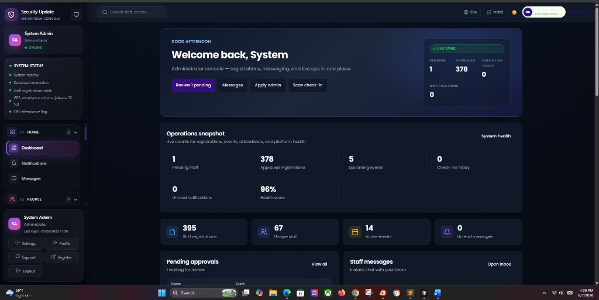
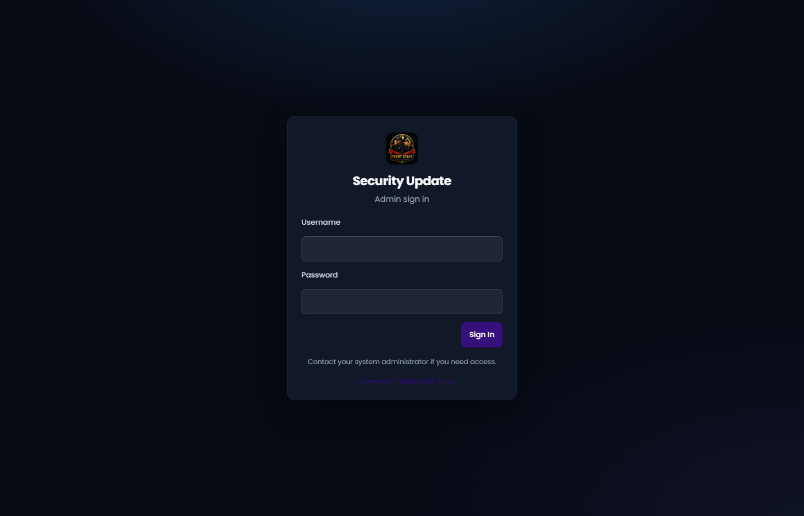

7 June 2026 · Layout & UX only (no logic/API/permission changes)
Result: Admin transformed from crowded dark control panel to ops-first enterprise layout.
Sidebar clutter reduced ~50%. Dashboard readable in under 5 seconds. Deployed to production.
Before vs after

Before: Profile card, system status widget, footer actions, duplicate metrics, black wall effect

After: Nav-only sidebar, top ops strip, main + right rail layout, glass cards
1. Files changed
assets/css/admin-v3.css (new design system)
assets/css/admin.css (lighter base tokens)
includes/admin/sidebar.php (decluttered)
includes/admin/header-bar.php (quick chips, notifications, user menu)
Main column: Pending approvals, upcoming events (deep links to event form), messages, funnel
Right rail: Quick actions, system health summary, GPS status, recent audit activity
5. Visual consistency (all admin pages)
Glass elevated cards with backdrop blur and soft shadows
Lighter slate palette (#0f172a base, not pure black)
Unified card radius (14px), typography, table headers, section nav styling
Applies globally via admin-v3.css on every layout page
6. Productivity improvements
Task
Improvement
Approve pending
1-click from header chip, ops strip, or right rail primary action
Scan check-in
Header chip (attendance role)
System health
Right rail score + user menu (no sidebar scroll)
New event
Right rail quick action
Export data
Header chip + right rail links
Settings / profile
User avatar dropdown (always visible)
7. Performance impact
Neutral to positive. Removed sidebar health PHP checks on every page load from sidebar (health still computed on dashboard right rail and system-health page only). One additional CSS file (~8KB). No new API calls. No database changes.
8. Remaining issues
Light/dark theme toggle still present — V3 optimized for dark SaaS; light mode may need a follow-up pass
Collapsed sidebar rail mode may need V3-specific tooltip polish
Signed-in production screenshot recommended after cache refresh (hard refresh Ctrl+F5)